Tema 5. Explorador de Windows
-Funciones del explorador de Windows
Con el Explorador de Windows, además de buscar y encontrar información de forma rápida, también nos ayuda a organizarla, copiarla, renombrarla, borrarla, entre otras cosas. Veamos qué ventajas nos ofrece esta utilería y cómo funciona.
Crear
Lo que debe saber antes de ponerle nombre a sus carpetas o archivos (Estas notas aplican tanto para Windows Vista y 7).
El nombre de sus archivos o carpetas deben:
- Contener menos de 225 caracteres, incluyendo espacios.
- No pueden contener los siguientes caracteres: \ / : * ? " <> |.
- No utilizar ciertos nombres como: com1, com2, clock$, con, lpt1, prn, nul.
Estos nombres no pueden asignarse a un archivo o carpeta, ya que el sistema operativo los reserva para designar dispositivos específicos que usa la computadora
Las carpetas se crean muy fácilmente y no existe un límite sobre el número de carpetas que se pueden tener. Existen procedimientos muy sencillos para poder crear carpetas en Windows (Windows Explorer). Los más usados son a través de:
Menú Archivo
- Abra el Explorador de Windows (Windows Explorer).
- Haga clic en el menú Archivo (File).
En Windows Vista tendrá que primero presionar la tecla ALT para desplegar el menú.
En Windows 7 debe presionar la tecla F10. - Seleccione la opción Nuevo (New), después Carpeta (Folder).
- La carpeta se creará automáticamente en el lugar que se haya elegido.
- Inmediatamente escriba el nombre de la carpeta recién creada.
- Haga clic fuera de la carpeta para deshabilitar esta función.
Menú Contextual
Los pasos para crear una carpeta con el menú contextual, son los siguientes:
- Ubique el ratón en el lugar físico donde desea crear la nueva carpeta.
- Haga clic con el botón derecho, para desplegar el menú contextual.
- Elija la opción Nueva carpeta (New Folder).
- La carpeta se habrá creado; enseguida asigne un nombre para la carpeta.
Menú Organizar
La creación de la carpeta varía un poco a como se hacía en otras versiones de Windows, pero los pasos son muy sencillos:
- Ubique el ratón en el lugar donde desea crear la carpeta nueva.
- Haga clic en el botón Organizar (Organize) de la Barra de Herramientas.
- Seleccione la opción Nueva carpeta (New Folder).
- La nueva carpeta tiene como nombre Nueva Carpeta, este es el nombre que Windows les aplica a todas las carpeta. Pero se puede cambiar el nombre de manera inmediata escribiendo dentro del recuadro. Este tema lo veremos más adelante.
Barra de herramientas
- Abra el Explorador de Windows (Windows Explorer).
- Haga clic en el Nueva carpeta (New Folder)de la barra de menús. La carpeta se creará automáticamente en el lugar que se haya elegido.
- Inmediatamente escriba el nombre de la carpeta recién creada.
- Haga clic fuera de la carpeta para deshabilitar esta función. 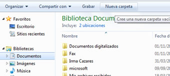
Renombrar
En ocasiones es necesario cambiar el nombre de las carpetas o los archivos para adecuarlos a la nueva información que se les agrega.
Menú Archivo
- Seleccione el archivo que desea renombrar.
- Abra el menú Archivo (File), después la opción Cambiar nombre (Rename).
En Windows Vista tendrá que primero presionar la tecla ALT para desplegar el menú.
En Windows 7 debe presionar la tecla F10. - Teclee el nuevo nombre y haga clic fuera de la carpeta para terminar.
Menú Contextual
- Seleccione la carpeta o archivo que desea renombrar.
- Abra el menú contextual con el clic derecho.
- Elija la opción Cambiar nombre (Rename).
- Teclee el nuevo nombre y haga clic afuera de la carpeta o archivo.
Sobre Carpeta
- Seleccione la carpeta o archivo.
- Haga clic sobre el nombre, hasta que aparezca el cursor intermitente.
- Teclee el nuevo nombre y haga clic fuera de la carpeta o archivo para terminar.
Tecla de función F2
- Seleccione la carpeta o archivo que desea renombrar.
- Haga clic izquierdo sobre el nombre.
- Oprima la tecla F2, inmediatamente aparecerá el cursor intermitente. 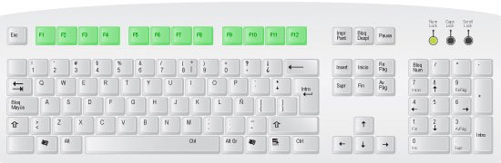
- Teclee el nuevo nombre y haga clic fuera de la carpeta o archivo para terminar.
Menú Organizar
- Seleccione la carpeta o archivo que desea renombrar.
- Abra el menú Organizar (Organize) y seleccione la opción Cambiar nombre (Rename).
- Teclee el nuevo nombre y haga clic fuera de la carpeta para terminar.
Copiar/Mover
Cuando trabajamos en la computadora nos vamos a encontrar con la necesidad de mover o copiar archivos. Hacer esto resulta muy sencillo. Veamos cuáles son los pasos para copiar y/o mover una carpeta o archivo.
Existen varios métodos para realizar esto, pero los más comunes son:
Menú de Edición (Mover, Copiar)
Mover
- Seleccione el archivo o carpeta a mover.
- Abra el menú Edición (Edit) de la barra de menús.
En Windows Vista tendrá que primero presionar la tecla ALT para desplegar el menú.
En Windows 7 debe presionar la tecla F10. - Seleccione la opción "Mover a la carpeta" (Move to folder...) 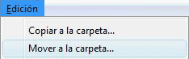
- Seleccione la carpeta a donde desea mover el archivo o carpeta.
- Haga clic en el botón Mover (Move).
Copiar
- Seleccione el archivo o carpeta a copiar.
- Abra el menú Edición (Edit) de la barra de menús.
En Windows Vista tendrá que primero presionar la tecla ALT para desplegar el menú.
En Windows 7 debe presionar la tecla F10. - Seleccione la opción Copiar (Copy). 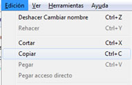
- Abra la carpeta donde desea copiar el archivo o carpeta.
- En la carpeta nueva, haga clic en el menú Edición (Edit) y seleccione la opción "Pegar" (Paste). 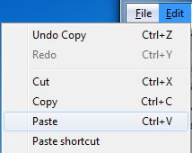
- El archivo o carpeta que haya copiado y pegado, aparecerá en el nuevo lugar.
Menú Contextual (Copiar)
- Seleccione el archivo o carpeta a copiar.
- Despliegue el menú contextual con un clic derecho.
- Elija la opción Copiar (Copy).
- Ubique el apuntador del ratón en el lugar donde desea copiar el archivo.
- Despliegue el menú contextual con un clic derecho y elija la opción Pegar (Paste).
Tecla de control Ctrl+ C (Copiar)
- Seleccione el archivo o carpeta que desea copiar.
- Presionar las teclas Ctrl + Letra C. 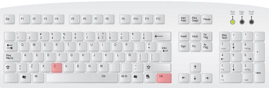
- Seleccione la carpeta o directorio donde quiere copiar el archivo.
- Presione las teclas Ctrl + Letra V. 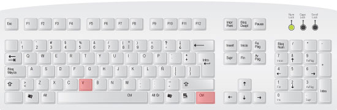
Arrastrar (Mover)
La manera más común de mover archivos y carpetas es empleando el método de arrastrar y soltar, lo que significa que selecciona uno o más archivos y los arrastra a otra ubicación. Por ejemplo, puede arrastrar un archivo al escritorio o arrastrar un archivo a una carpeta para moverlo a dicha ubicación.
- Localice el archivo a mover.
- Seleccione el archivo con un clic izquierdo.
- Manteniéndolo presionado, arrastre el archivo o carpeta al lugar donde lo desea mover.
- Suelte el botón del ratón (mouse).
Borrar
En ocasiones vamos a necesitar borrar archivos para no confundirnos a la hora de trabajar, o borrar información que ya no deseamos tener en la computadora y que sólo ocupa espacio. Al borrar información, la primera opción es enviarla a la papelera; la segunda opción es borrarla definitivamente.
Para borrar carpetas o archivos, existen tres formas muy comunes:
Menú Contextual
- Seleccione con el apuntador del ratón el archivo o carpeta que desea eliminar.
- Despliegue un menú contextual con el botón derecho del ratón (mouse).
- Seleccione la opción Eliminar (Delete).
Tecla de control SUPR
- Seleccione el archivo a eliminar.
- Oprima la tecla SUPR (Delete).
- Enseguida aparecerá un cuadro de confirmación para borrar el archivo. 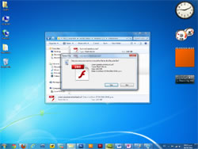
- Seleccione la opción "Sí" (Yes) para borrar el archivo.
- Si no desea borrar el archivo, seleccione la opción "No".
 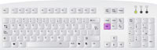
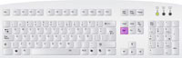
Arrastrando a papelera
- Seleccione el archivo a eliminar.
- Con el ratón, arrástrelo hacia la papelera.
Buscar
Esta función nos ayuda a buscar información en la computadora de manera fácil. A veces creamos archivos y luego no recordamos qué nombre le pusimos. O a veces es tanta la información que no recordamos dónde la guardamos.
Cuando ocurre esto, tenemos la opción de buscar los archivos por varios criterios, veamos cómo se hace.
Desde un cuadro de búsqueda Windows Vista y 7
En este método, al escribir la palabra, se nos presentarán las opciones disponibles. 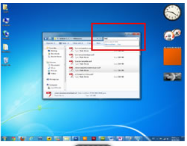
Búsqueda en menú Inicio
Escribir el nombre del archivo o carpeta en el buscador.
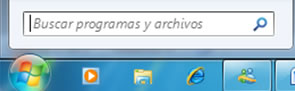
Ordenar
Una forma fácil de encontrar un archivo consiste en ordenar el contenido en carpetas según ciertas características, como: agrupar todos los archivos de un mismo mes, la información de un proyecto, etc. Si después de ese orden, todavía es complicado encontrar información, entonces lo más fácil es ordenar los archivos de acuerdo a otros criterios.
Los siguientes pasos permiten ordenar archivos de la manera más fácil:
- Abra la carpeta donde desea ordenar los archivos.
- En cualquier lugar de la carpeta, excepto sobre un archivo, despliegue el menú contextual, con el botón derecho del ratón (mouse). 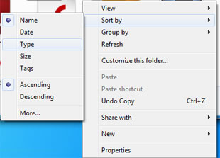
- Elija la opción con la que desea ordenar los archivos o carpetas (Arrange icons by). Las opciones son:
- Nombre (Name): ordena los archivos por nombre, en orden alfabético.
- Tamaño (Size): ordena los archivos por el tamaño del archivo o carpeta.
- Tipo (Type): ordena los archivos por tipo de archivo; ejemplo: Word, Excel, Power Point, imagen jpg, gif, etc.
- Fecha en que fue modificado (Date Modified) los archivos se ordenan por la última fecha en que fueron modificados o editados.
- Al seleccionar la opción, los archivos y carpetas se habrán ordenado automáticamente de la manera indicada.